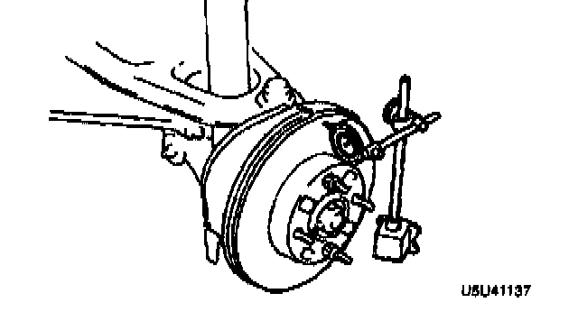

Rear
DISC PLATE THICKNESS INSPECTION1. Measure the thickness of the disc plate.
Caution: When it is necessary to machine the disc plate, if the disc plate is removed from the vehicle then machined, excessive runout may result. Machine the disc plate with it installed on the vehicle.
Minimum thickness: 8.0 mm (0.31 inch)
Minimum thickness after machining by using a brake lathe on-vehicle: 8.4 mm (0.33 inch)
2. If the thickness is not within the specification, replace the disc plate.
DISC PLATE RUNOUT INSPECTION

^ Tighten the disc plate to the wheel hub by using two wheel nuts. When measuring runout, measure at the outer edge of the disc plate surface.
Runout limit: 0.05 mm (0.002 inch) max.